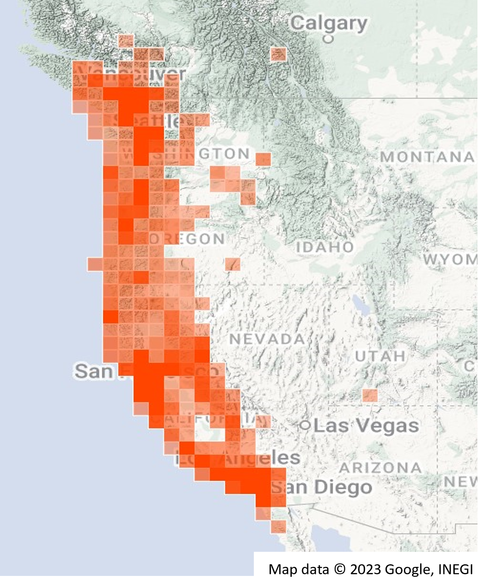
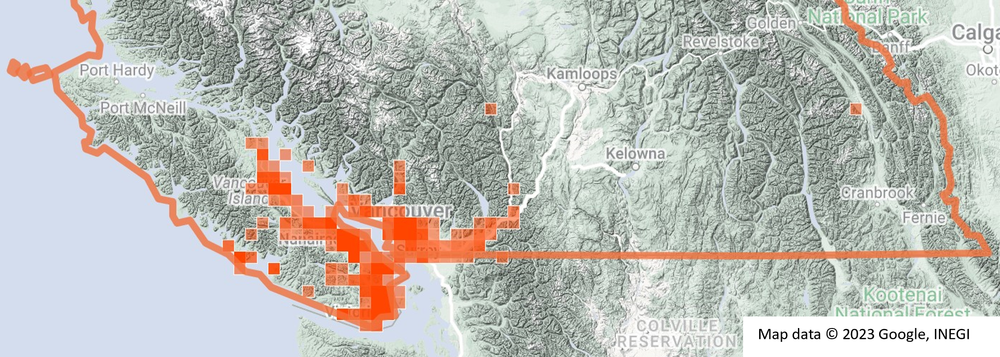
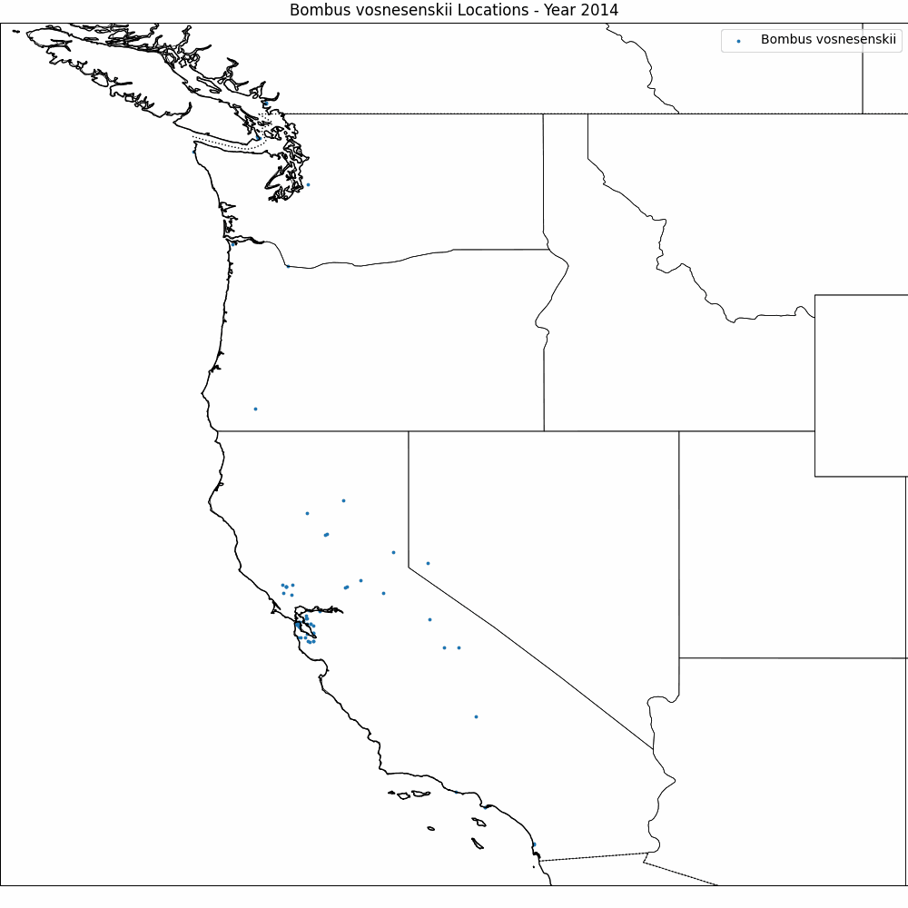

Feature bee - Bombus vosnesenskii
Reading time: 4 minutes
This article was prepared for The Native Bee Society of BC’s (NBSBC) Quarterly Buzz Oct, 2023 and edited for the Galiwatch site.
Bombus vosnesenski (B. vos) was first seen on Galiano in 2017 1, and is one of the six bumble bees currently known to call Galiano home.
With its distinctive bright yellow face, and indiscriminate taste for nectar and pollen sources, you will almost certainly see this black bumble buzzing around all sorts of different plants in the Gulf Islands, Vancouver Island, and the Lower Mainland, as in recent years it has become one of the most common bumblebees in the region.
This has not always been the case though - not that long ago B. vos was a rarity in British Columbia. It first appears in the records in the 1950s when a few specimens were found in the interior of BC, and there was talk of it being assigned threatened or endangered status. By 2000 however, it had expanded through the Okanagan and Similkameen valleys, as well as having become firmly established in the Pacific Maritime region 2.

Data source
To look at recent trends in B. vos’ range, we went to the iNaturalist (iNAt) website (www.inaturalist.org). iNat is an online social network of people sharing biodiversity information, which began as a research project in 2008. By 2014 over a million observations had been made and the number of observations has approximately doubled each year since. As of Jan 2023, iNat had 2.3 million users and around 160 million observations of plants, animals, and other organisms from around the world with well over 100 million verified results.
Global range
To see what B. vos has been up to recently, we downloaded all research grade records from iNAt from Jan 1, 2014, to Sep 15, 2023 and checked out the data.
First off, we found this bumble has only been observed in North America, where it has been spotted as far North as Lillooet, BC and as far South as El Maneadero Parte Baja, in Baja California, Mexico.
Like many of us, B. vos seems to like the West Coast!

B. vos in Canada
When we look within Canada, we see BC is the only province where B. vos has been observed to date, with the Fraser Valley generally being as far east as they go. Notably, given the historical record, there have been no observations in the Okanagan or Similkameen valleys. When we zoom in, we find it is present in both urban and non-urban areas, with around half the iNat observations occurring in Greater Vancouver, Victoria, and Nanaimo. This is consistent with B. vos being able to forage effectively in regions with a mixed landscape.
{fig-alt=“Map of southern BC, with heatmap overlaid. Highest densities of observations on east side of Vancouver island, and around Vancouver. Single outlier observations near Kamloops, and Banff}
Range expansion
By parsing the iNat data by year, we can see in the video how B. vos’ range has steadily moved North between 2014 and 2023, and how firmly it has become established in the Pacific Maritime region.

B. vos emergence and activity
The pooled iNAt data from 2014 to 2023 are consistent with early emergence of B. vos with multiple sightings beginning in February that steadily increase through the spring. These bumbles are highly active through July and August when their numbers peak and some are still active into mid October.

B. vos floral associations
Two hundred and forty iNat records from BCincluded floral associations for B. vos. The extensive plant list is consistent with our understanding that this bumble is a generalist forager.
Table: Bombus vosnesenskii floral associations
Conclusions
iNaturalist data has given us a peak at the establishment and habits of Bombus vosnesenski in BC in recent years. There are limitations with using these data though that may bias the results. Although we selected for research grade observations there could be misidentifications of the bees themselves, and/or the plants they were feeding on. As well, there is no way to validate the accuracy of location information, although this is often obtained through the gps system of a cell phone, or the floral resource identifications. On occasion, there may be multiple records submitted of the same bee, and the number of people adding observations is increasing year upon year, so the annual number of observations is a moving target. Nevertheless, it’s interesting to see what crowd sourced data reveals!
Footnotes
Andrew Simon. 2017. Available at https://inaturalist.ca/observations/6412054. Accessed 27/09/2023↩︎
Fraser DF, Copley CR, Elle E, Cannings RA. Changes in the Status and Distribution of the Yellow-faced Bumble Bee. Journal of the Entomological Society of British Columbia. 2012;109:31-7.↩︎
iNaturalist. (n.d.). Map of world research grade observations of B. vosnesenskii from Jan1, 2014, to 15 Sept 2023. Available from: https://inaturalist.ca/observations?place_id=any&subview=map&taxon_id=57689 Accessed Sept 16th, 2023.↩︎
iNaturalist. (n.d.). Map of British Columbia research grade observations of B. vosnesenskii. Jan 1, 2014, to Sep 15, 2023. Available from: https://inaturalist.ca/observations?place_id=7085&subview=map&taxon_id=57689 Accessed Sept 16th, 2023.↩︎
Data source: https://inaturalist.ca/observations?place_id=any&subview=table&taxon_id=57689↩︎